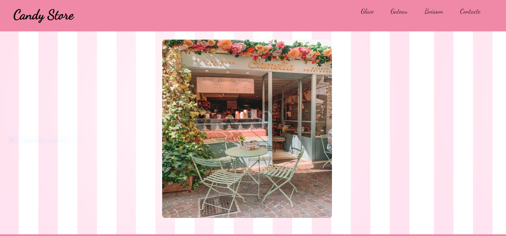

Project 2022/2023
-
Projet Candy Store

Lien Github : https://github.com/bulle-creator/Candy_Store
Pour ce projet j'ai voulu faire un site vitrine, pour un café spécialisée dans les sucreries. Le café s'appele Candy Store et vende des boissons, des glaces et gâteaux. La particularité du café et que les menus sont inspirés des couleurs.
Projet Symphony

Lien Github : https://github.com/bulle-creator/Vetux-Line
La société de service dans laquelle vous travaillez a comme client l’entreprise VETUX-LINE, createur de ligne de vêtements. La société VETUX-LINE reçoit de la part de ses partenaires, tous les mois, 2 fichiers clients au format CSV. Afin d’exploiter ces fichiers partenaires, VETUX-LINE souhaite disposer d’un outil (une application) lui permettant de fusionner ces 2 fichiers en un fichier unique. La société nous communique des exemples de fichiers reçus. Ces fichiers sont : french-client.csv (~3000 clients) et german-client.csv (~2000 clients). Ces fichiers ont même structure (même type et nombre de colonnes). Les fichiers reçus contiennent plus d’information que nécessaire. Le fichier résultant de la fusion sera composé d’un sous-ensemble des colonnes existantes (appelé projection) et une sélection de lignes sera effectuée (sélection des personnes majeures uniquement, suppression de doublons…). La demande du client est détaillée plus loin dans ce document. Dans un second temps (seconde partie de la mission), le service R&D de la société VETUX-LINE souhaite obtenir ces données sous la forme d’une base de données relationnelle.
Projet QRCode

Lien Github : https://github.com/bulle-creator/QRcode
L’entreprise CodeAlpha s’est spécialisée dans la production de produits à destination des centrales nucléaires, des laboratoires de physique, des universités, etc... Elle doit gérer les présences de son personnel, techniciens, ingénieurs, responsables, etc. dans des salles sous contraintes liées à la radioactivité. Actuellement, elle utilise des lecteurs de cartes magnétiques à l’entrée de ses salles, permettant une remontée des informations dans une application tiers avec enregistrement dans un fichier de type tableur. Elle désire remplacer, pour une meilleure gestion des accès, les lecteurs de cartes magnétiques par des lecteurs de QR Code à l’entrée des salles avec un traitement par une application NodeJS interne.